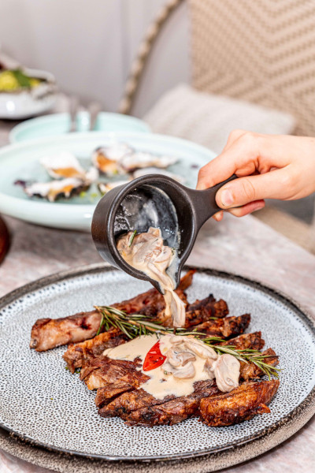

Pork chops

- 2 kg of pork ribs
- 2 tablespoons of salt
- Black pepper to taste
- lemon juice
- 4 cloves of crushed garlic
- 2 cups of cassava flour
Preparation
- Cut the ribs and season with salt, pepper, lemon juice and garlic.
- After 4 hours, pass the ribs in the manioc flour, place in a greased pan.
- Bake in the oven to brown it can also be done on a skewer.